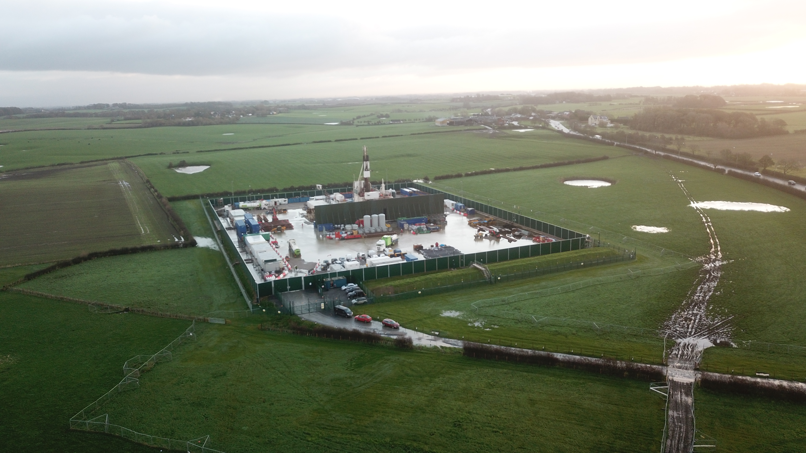

Inspect mapped relative surface-elevation differences between the 2018 and 2022 survey epochs. The map includes interpretation guidance concerning vertical change, engineered surfaces, survey effects and possible lateral displacement signatures.
Documenting ground and water change across the Preston New Road corridor
An evidence-led public archive examining environmental change, monitoring and institutional response around Preston New Road and the wider Fylde landscape.
Observation, analysis, accountability — examining the boundaries carefully.
Public notice: Lancashire County Council announced on 8 June 2026 that it had served an enforcement notice requiring removal of the Preston New Road site infrastructure within four months and restoration of the land within six months of service. Read the public notice →

Preston New Road within the surrounding Fylde landscape during operations, showing extensive standing water and waterlogged tracks across the surrounding fields. The archive examines the site together with the fields, drainage systems, water bodies and infrastructure around it.
Why this archive exists
This archive brings together evidence developed through sustained observation of Preston New Road and the surrounding landscape since 2017. The work began with individual surface and water observations, but repeated comparison increasingly indicated that they needed to be considered spatially and temporally rather than as isolated incidents.
The site preserves the resulting reports, imagery, mapping and governance analysis in a form that can be inspected by regulators, researchers, legal reviewers and the public. Observation, comparison and interpretation are kept distinct wherever practicable.
Current working hypothesis
The available evidence supports a coherent, scientifically plausible hypothesis concerning recurring hydrogeological, geomorphological, geochemical and surface-expression changes across the Preston New Road, Peel Hill Farm and wider Fylde landscape since 2011 — sufficient to justify a connected hydrogeological, geochemical and ground-mechanics investigation. It is not yet a proven causal account.
Read the current working hypothesis →July 2026 evidential update
Four linked studies bring together recent field observations, historical aerial imagery, LiDAR comparison and native environmental measurement data from Preston New Road, Peel Hill Farm and the adjoining corridor.
PHF–BAL Integrated Evidential Update
Eight connected locations, corridor-wide
Scarp, Depressions and Pond-Associated Change
Beside Preston New Road, 2017–2026
Peel Hill Farm Sentinel Study
Working paper, v0.1
Comparative Gamma Survey Review
Feb & July 2026 measurements
Explore the LiDAR comparison

From evidence to assurance
Environmental assurance depends not only on whether a physical change exists, but on whether monitoring systems are capable of detecting it, whether observations cross an institutional threshold, and whether responsibility for investigating them is clear. The governance papers examine these questions separately from the site-specific field evidence.